Web Server Statistics for logammuliaku.com
Web Server Statistics for logammuliaku.com
Program started on Tue, Mar 31 2026 at 5:28 PM.
Analyzed requests from Fri, Mar 27 2026 at 4:47 PM to Tue, Mar 31 2026 at 5:23 PM (4.03 days).
Web Server Statistics for logammuliaku.comProgram started on Tue, Mar 31 2026 at 5:28 PM.
Analyzed requests from Fri, Mar 27 2026 at 4:47 PM to Tue, Mar 31 2026 at 5:23 PM (4.03 days).
(Go To: Top | General Summary | Monthly Report | Daily Summary | Hourly Summary | Domain Report | Organization Report | Redirected Referrer Report | Failed Referrer Report | Referring Site Report | Browser Report | Browser Summary | Operating System Report | Status Code Report | File Size Report | File Type Report | Directory Report | Request Report)
Successful requests: 494
Average successful requests per day: 122
Successful requests for pages: 383
Average successful requests for pages per day: 94
Failed requests: 1,019
Redirected requests: 969
Distinct files requested: 404
Distinct hosts served: 177
Data transferred: 734.02 kilobytes
Average data transferred per day: 182.36 kilobytes
(Go To: Top | General Summary | Monthly Report | Daily Summary | Hourly Summary | Domain Report | Organization Report | Redirected Referrer Report | Failed Referrer Report | Referring Site Report | Browser Report | Browser Summary | Operating System Report | Status Code Report | File Size Report | File Type Report | Directory Report | Request Report)
Each unit ( ) represents 10 requests for pages or part thereof.
) represents 10 requests for pages or part thereof.
| month | #reqs | #pages | |
|---|---|---|---|
| Mar 2026 | 494 | 383 |    |
Busiest month: Mar 2026 (383 requests for pages).
(Go To: Top | General Summary | Monthly Report | Daily Summary | Hourly Summary | Domain Report | Organization Report | Redirected Referrer Report | Failed Referrer Report | Referring Site Report | Browser Report | Browser Summary | Operating System Report | Status Code Report | File Size Report | File Type Report | Directory Report | Request Report)
Each unit () represents 4 requests for pages or part thereof.
| day | #reqs | #pages | |
|---|---|---|---|
| Sun | 243 | 169 |  |
| Mon | 165 | 156 | |
| Tue | 29 | 26 | |
| Wed | 0 | 0 | |
| Thu | 0 | 0 | |
| Fri | 33 | 19 | |
| Sat | 24 | 13 | |
(Go To: Top | General Summary | Monthly Report | Daily Summary | Hourly Summary | Domain Report | Organization Report | Redirected Referrer Report | Failed Referrer Report | Referring Site Report | Browser Report | Browser Summary | Operating System Report | Status Code Report | File Size Report | File Type Report | Directory Report | Request Report)
Each unit () represents 3 requests for pages or part thereof.
| hour | #reqs | #pages | |
|---|---|---|---|
| 0 | 19 | 18 | |
| 1 | 7 | 6 | |
| 2 | 2 | 0 | |
| 3 | 0 | 0 | |
| 4 | 8 | 8 | |
| 5 | 1 | 0 | |
| 6 | 0 | 0 | |
| 7 | 18 | 17 | |
| 8 | 20 | 1 | |
| 9 | 1 | 0 | |
| 10 | 2 | 1 | |
| 11 | 11 | 6 | |
| 12 | 9 | 5 | |
| 13 | 32 | 31 | |
| 14 | 14 | 12 | |
| 15 | 9 | 7 | |
| 16 | 4 | 4 | |
| 17 | 2 | 2 | |
| 18 | 149 | 83 |  |
| 19 | 2 | 2 | |
| 20 | 129 | 129 | |
| 21 | 6 | 4 | |
| 22 | 1 | 0 | |
| 23 | 48 | 47 | |
(Go To: Top | General Summary | Monthly Report | Daily Summary | Hourly Summary | Domain Report | Organization Report | Redirected Referrer Report | Failed Referrer Report | Referring Site Report | Browser Report | Browser Summary | Operating System Report | Status Code Report | File Size Report | File Type Report | Directory Report | Request Report)
Listing domains, sorted by the amount of traffic.
| #reqs | %bytes | domain |
|---|---|---|
| 494 | 100% | [unresolved numerical addresses] |
(Go To: Top | General Summary | Monthly Report | Daily Summary | Hourly Summary | Domain Report | Organization Report | Redirected Referrer Report | Failed Referrer Report | Referring Site Report | Browser Report | Browser Summary | Operating System Report | Status Code Report | File Size Report | File Type Report | Directory Report | Request Report)
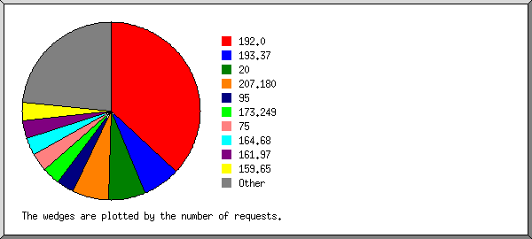
Listing the top 20 organizations by the number of requests, sorted by the number of requests.
| #reqs | %bytes | organization |
|---|---|---|
| 390 | 62.11% | 192.0 |
| 19 | 185.8 | |
| 15 | 11.98% | 51 |
| 10 | 0.08% | 163.223 |
| 8 | 1.92% | 34 |
| 5 | 54 | |
| 5 | 0.11% | 66.249 |
| 3 | 1.92% | 206.81 |
| 2 | 0.02% | 18 |
| 2 | 0.38% | 57 |
| 2 | 122 | |
| 2 | 20 | |
| 2 | 0.76% | 35 |
| 2 | 0.76% | 202.58 |
| 2 | 193.36 | |
| 2 | 0.76% | 114 |
| 1 | 0.01% | 13 |
| 1 | 0.02% | 17 |
| 1 | 152.42 | |
| 1 | 0.38% | 93 |
| 19 | 18.77% | [not listed: 19 organizations] |
(Go To: Top | General Summary | Monthly Report | Daily Summary | Hourly Summary | Domain Report | Organization Report | Redirected Referrer Report | Failed Referrer Report | Referring Site Report | Browser Report | Browser Summary | Operating System Report | Status Code Report | File Size Report | File Type Report | Directory Report | Request Report)
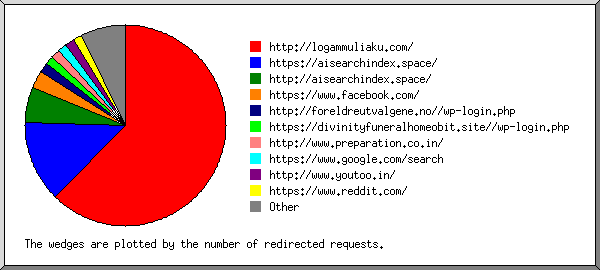
Listing referring URLs, sorted by the number of redirected requests.
| #reqs | URL |
|---|---|
| 7 | http://logammuliaku.com/ |
| 1 | https://aisearchindex.space/ |
| 1 | android-app://com.google.android.googlequicksearchbox/ |
(Go To: Top | General Summary | Monthly Report | Daily Summary | Hourly Summary | Domain Report | Organization Report | Redirected Referrer Report | Failed Referrer Report | Referring Site Report | Browser Report | Browser Summary | Operating System Report | Status Code Report | File Size Report | File Type Report | Directory Report | Request Report)
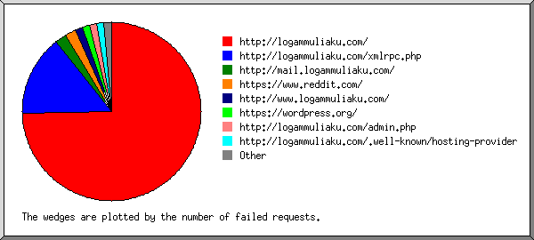
Listing referring URLs, sorted by the number of failed requests.
| #reqs | URL |
|---|---|
| 71 | http://logammuliaku.com/ |
| 6 | http://logammuliaku.com/xmlrpc.php |
(Go To: Top | General Summary | Monthly Report | Daily Summary | Hourly Summary | Domain Report | Organization Report | Redirected Referrer Report | Failed Referrer Report | Referring Site Report | Browser Report | Browser Summary | Operating System Report | Status Code Report | File Size Report | File Type Report | Directory Report | Request Report)
Listing referring sites, sorted by the number of requests.
| #reqs | site |
|---|---|
| 359 | http://logammuliaku.com/ |
(Go To: Top | General Summary | Monthly Report | Daily Summary | Hourly Summary | Domain Report | Organization Report | Redirected Referrer Report | Failed Referrer Report | Referring Site Report | Browser Report | Browser Summary | Operating System Report | Status Code Report | File Size Report | File Type Report | Directory Report | Request Report)
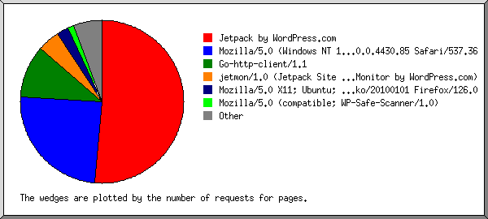
Listing browsers with at least 1 request for a page, sorted by the number of requests for pages.
| #reqs | #pages | browser |
|---|---|---|
| 359 | 308 | Jetpack by WordPress.com |
| 34 | 34 | jetmon/1.0 (Jetpack Site Uptime Monitor by WordPress.com) |
| 3 | 3 | Mozilla/5.0 (Windows NT 10.0; Win64; x64) AppleWebKit/537.36 (KHTML, like Gecko) Chrome/74.0.3729.169 Safari/537.36 |
| 6 | 3 | Mozilla/5.0 (X11; Ubuntu; Linux x86_64; rv:109.0) Gecko/20100101 Firefox/117.0 |
| 3 | 3 | Mozilla/5.0 (l9scan/2.0.4343e2732323e2332323e2336313; +https://leakix.net) |
| 2 | 2 | Mozilla/5.0 (Windows NT 10.0; Win64; x64) AppleWebKit/537.36 (KHTML, like Gecko) Chrome/42.0.2311.135 Safari/537.36 Edge/12.246 |
| 2 | 2 | Mozilla/5.0 (Windows NT 10.0; Win64; x64) AppleWebKit/537.36 (KHTML, like Gecko) Chrome/98.0.4758.102 Safari/537.36 |
| 3 | 2 | facebookexternalhit/1.1 (+http://www.facebook.com/externalhit_uatext.php) |
| 2 | 2 | Mozilla/5.0 (X11; Linux x86_64) AppleWebKit/537.36 (KHTML, like Gecko) Chrome/125.0.0.0 Safari/537.36 |
| 2 | 2 | Mozilla/5.0 (Linux; Android 10; K) AppleWebKit/537.36 (KHTML, like Gecko) Chrome/146.0.0.0 Mobile Safari/537.36 |
| 2 | 2 | Mozilla/5.0 (Windows NT 10.0; Win64; x64) AppleWebKit/537.36 (KHTML, like Gecko) Chrome/146.0.0.0 Safari/537.36 |
| 5 | 1 | Mozilla/5.0 (compatible; MJ12bot/v2.0.5; http://mj12bot.com/) |
| 1 | 1 | Mozilla/5.0 (X11; Ubuntu; Linux i686; rv:28.0) Gecko/20100101 Firefox/28.0 |
| 1 | 1 | Mozilla/5.0 (Windows NT 6.3; Win64; x64; Trident/7.0; Touch; MATBJS; rv:11.0) like Gecko |
| 1 | 1 | Mozilla/5.0 (compatible; MSIE 9.0; Windows NT 6.1; WOW64; Trident/5.0) |
| 1 | 1 | Mozilla/5.0 (Windows NT 6.2; Win64; x64; rv:16.0.1) Gecko/20121011 Firefox/21.0.1 |
| 1 | 1 | Mozilla/5.0 (SymbianOS/9.4; U; Series60/5.0 SonyEricssonP100/01; Profile/MIDP-2.1 Configuration/CLDC-1.1) AppleWebKit/525 (KHTML, like Gecko) Version/3.0 Safari/525 |
| 1 | 1 | Mozilla/5.0 (Windows NT 10.0; Win64; x64) Chrome/120.0 Safari/537.36 |
| 1 | 1 | curl/7.83.1 |
| 1 | 1 | Mozilla/5.0 (compatible; CMS-Checker/1.0; +https://example.com) |
| 1 | 1 | Mozilla/5.0 (Windows NT 10.0; Win64; x64) AppleWebKit/537.36 (KHTML, like Gecko) Chrome/117.0.5938.132 Safari/537.36 |
| 1 | 1 | Mozilla/5.0 (Windows NT 6.3; Win64; x64) AppleWebKit/537.36 (KHTML, like Gecko) Chrome/37.0.2049.0 Safari/537.36 |
| 6 | 1 | Mozilla/5.0 (compatible; Googlebot/2.1; +http://www.google.com/bot.html) |
| 1 | 1 | Mozilla/5.0 (Macintosh; Intel Mac OS X 10_14_0) AppleWebKit/537.36 (KHTML, like Gecko) Chrome/84.0.4147.125 Safari/537.36 |
| 1 | 1 | Mozilla/5.0 (Windows NT 6.0) AppleWebKit/537.36 (KHTML, like Gecko) Chrome/41.0.2272.89 Safari/537.36 |
| 1 | 1 | Mozilla/5.0 (iPhone; CPU iPhone OS 16_3 like Mac OS X) AppleWebKit/605.1.15 (KHTML, like Gecko) CriOS/122.0.6261.89 Mobile/15E148 Safari/604 |
| 46 | 0 | [not listed: 29 browsers] |
(Go To: Top | General Summary | Monthly Report | Daily Summary | Hourly Summary | Domain Report | Organization Report | Redirected Referrer Report | Failed Referrer Report | Referring Site Report | Browser Report | Browser Summary | Operating System Report | Status Code Report | File Size Report | File Type Report | Directory Report | Request Report)
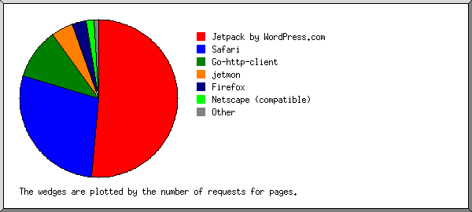
Listing browsers with at least 1 request for a page, sorted by the number of requests for pages.
| # | #reqs | #pages | browser |
|---|---|---|---|
| 1 | 359 | 308 | Jetpack by WordPress.com |
| 2 | 34 | 34 | jetmon |
| 34 | 34 | jetmon/1 | |
| 3 | 37 | 20 | Safari |
| 30 | 18 | Safari/537 | |
| 2 | 1 | Safari/604 | |
| 1 | 1 | Safari/525 | |
| 4 | 9 | 5 | Firefox |
| 6 | 3 | Firefox/117 | |
| 1 | 1 | Firefox/21 | |
| 1 | 1 | Firefox/28 | |
| 5 | 6 | 4 | Mozilla |
| 6 | 17 | 3 | Netscape (compatible) |
| 7 | 3 | 2 | facebookexternalhit |
| 3 | 2 | facebookexternalhit/1 | |
| 8 | 2 | 1 | MSIE |
| 1 | 1 | MSIE/9 | |
| 9 | 1 | 1 | curl |
| 1 | 1 | curl/7 | |
| 20 | 0 | [not listed: 7 browsers] |
(Go To: Top | General Summary | Monthly Report | Daily Summary | Hourly Summary | Domain Report | Organization Report | Redirected Referrer Report | Failed Referrer Report | Referring Site Report | Browser Report | Browser Summary | Operating System Report | Status Code Report | File Size Report | File Type Report | Directory Report | Request Report)
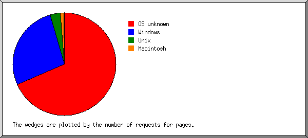
Listing operating systems, sorted by the number of requests for pages.
| # | #reqs | #pages | OS |
|---|---|---|---|
| 1 | 437 | 351 | OS unknown |
| 2 | 19 | 16 | Windows |
| 11 | 11 | Windows NT | |
| 7 | 5 | Unknown Windows | |
| 1 | 0 | Windows XP | |
| 3 | 18 | 8 | Unix |
| 17 | 8 | Linux | |
| 1 | 0 | Other Unix | |
| 4 | 12 | 2 | Macintosh |
| 5 | 1 | 1 | Symbian OS |
| 6 | 1 | 0 | Known robots |
(Go To: Top | General Summary | Monthly Report | Daily Summary | Hourly Summary | Domain Report | Organization Report | Redirected Referrer Report | Failed Referrer Report | Referring Site Report | Browser Report | Browser Summary | Operating System Report | Status Code Report | File Size Report | File Type Report | Directory Report | Request Report)
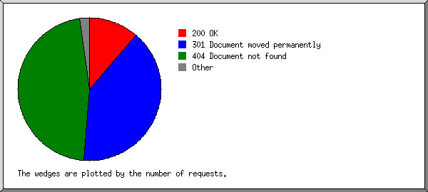
Listing status codes, sorted numerically.
| #reqs | status code |
|---|---|
| 494 | 200 OK |
| 962 | 301 Document moved permanently |
| 7 | 302 Document found elsewhere |
| 11 | 400 Bad request |
| 22 | 403 Access forbidden |
| 863 | 404 Document not found |
| 1 | 405 Method not allowed |
| 1 | 409 Request conflicts with state of resource |
| 56 | 500 Internal server error |
| 2 | 501 Request type not supported |
| 63 | 503 Service temporarily unavailable |
(Go To: Top | General Summary | Monthly Report | Daily Summary | Hourly Summary | Domain Report | Organization Report | Redirected Referrer Report | Failed Referrer Report | Referring Site Report | Browser Report | Browser Summary | Operating System Report | Status Code Report | File Size Report | File Type Report | Directory Report | Request Report)
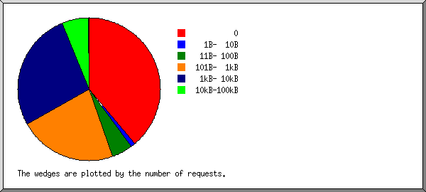
| size | #reqs | %bytes |
|---|---|---|
| 0 | 281 | |
| 1B- 10B | 8 | 0.01% |
| 11B- 100B | 50 | 0.25% |
| 101B- 1kB | 68 | 3.99% |
| 1kB- 10kB | 67 | 28.48% |
| 10kB-100kB | 19 | 51.81% |
| 100kB- 1MB | 1 | 15.47% |
(Go To: Top | General Summary | Monthly Report | Daily Summary | Hourly Summary | Domain Report | Organization Report | Redirected Referrer Report | Failed Referrer Report | Referring Site Report | Browser Report | Browser Summary | Operating System Report | Status Code Report | File Size Report | File Type Report | Directory Report | Request Report)
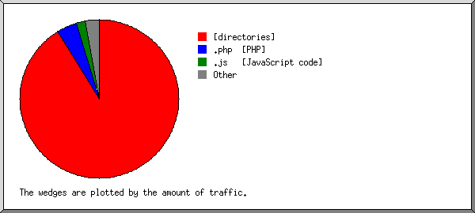
Listing extensions with at least 0.1% of the traffic, sorted by the amount of traffic.
| #reqs | %bytes | extension |
|---|---|---|
| 383 | 86.51% | [directories] |
| 3 | 5.46% | .png [PNG graphics] |
| 1 | 3.33% | .jpg [JPEG graphics] |
| 54 | 3.24% | .php [PHP] |
| 3 | 0.99% | .css [Cascading Style Sheets] |
| 17 | 0.33% | .txt [Plain text] |
| 14 | 0.13% | [no extension] |
| 19 | [not listed: 1 extension] |
(Go To: Top | General Summary | Monthly Report | Daily Summary | Hourly Summary | Domain Report | Organization Report | Redirected Referrer Report | Failed Referrer Report | Referring Site Report | Browser Report | Browser Summary | Operating System Report | Status Code Report | File Size Report | File Type Report | Directory Report | Request Report)
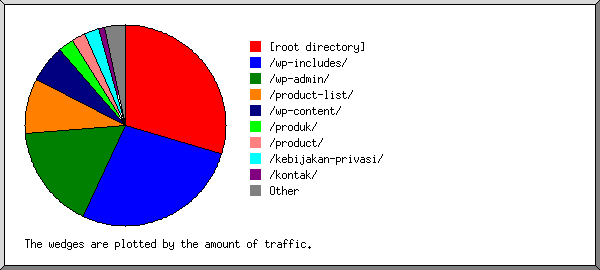
Listing directories with at least 0.01% of the traffic, sorted by the amount of traffic.
| #reqs | %bytes | directory |
|---|---|---|
| 447 | 69.22% | [root directory] |
| 1 | 15.47% | /kebijakan-privasi/ |
| 6 | 12.38% | /wp-content/ |
| 5 | 2.61% | /wp-includes/ |
| 15 | 0.32% | /.well-known/ |
| 20 | [not listed: 4 directories] |
(Go To: Top | General Summary | Monthly Report | Daily Summary | Hourly Summary | Domain Report | Organization Report | Redirected Referrer Report | Failed Referrer Report | Referring Site Report | Browser Report | Browser Summary | Operating System Report | Status Code Report | File Size Report | File Type Report | Directory Report | Request Report)
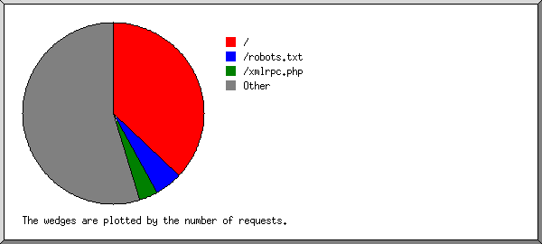
Listing files with at least 20 requests, sorted by the number of requests.
| #reqs | %bytes | last time | file |
|---|---|---|---|
| 376 | 65.65% | Mar/31/26 1:54 PM | / |
| 51 | 3.24% | Mar/29/26 6:39 PM | /xmlrpc.php |
| 67 | 31.11% | Mar/31/26 2:52 PM | [not listed: 43 files] |